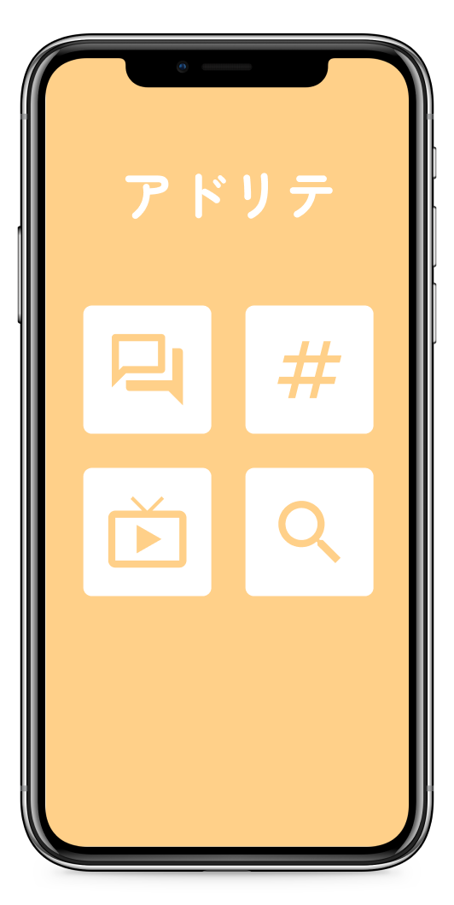
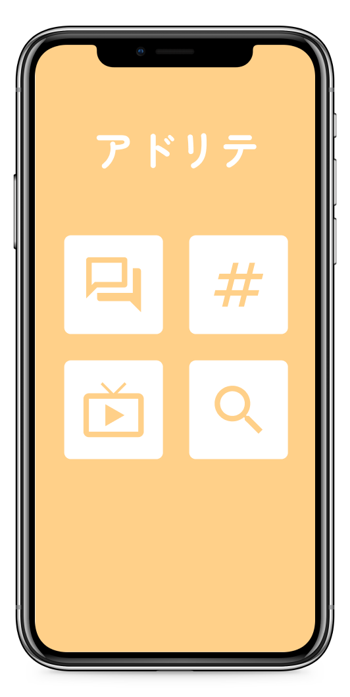
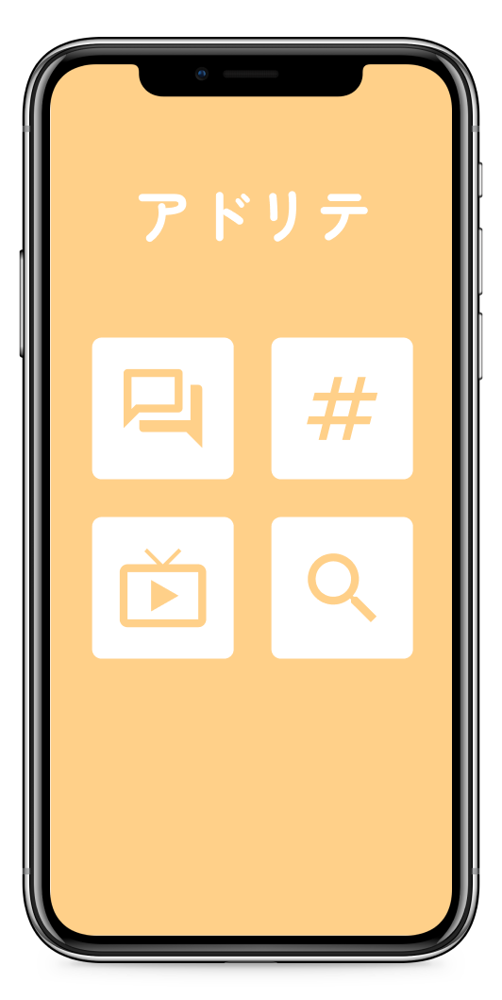

アドリテでは教科書では学べない4つの機能を擬似的に体験することでアプリ(AI)がフィードバックを行ってくれます
#SNSの疑似体験
#ネットリテラシーを学ぶアプリ
 

インターネットは低年齢化しているため、トラブルにまきこまれないためにも早い段階からネットリテラシーを身に付ける必要があります
そこでターゲットとして小学校低学年を設定し、スマートフォンを持つ前に楽しみながらネットリテラシーが身に付けられるアプリを考えました

インターネットは低年齢化しているため、トラブルにまきこまれないためにも早い段階からネットリテラシーを身に付ける必要があります
そこでターゲットとして小学校低学年を設定し、スマートフォンを持つ前に楽しみながらネットリテラシーが身に付けられるアプリを考えました
アドリテでは教科書では学べない4つの機能を擬似的に体験することでアプリ(AI)がフィードバックを行ってくれます